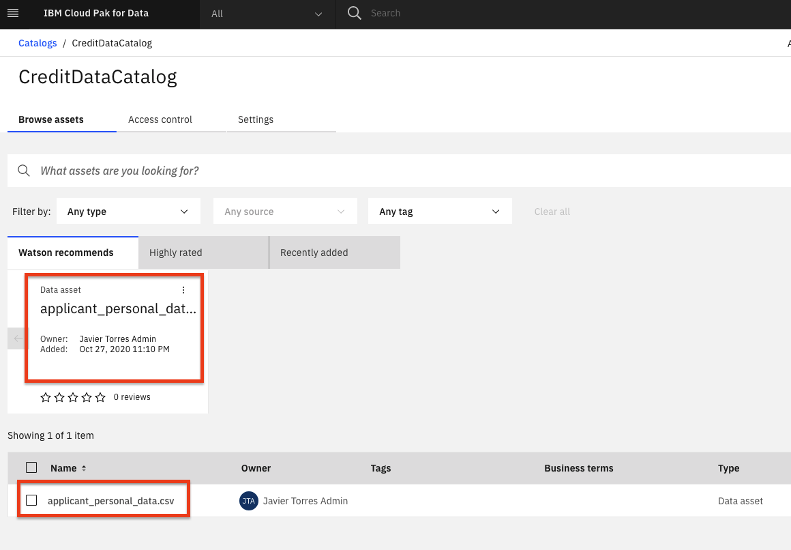
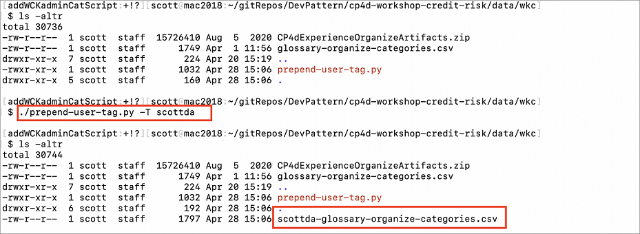
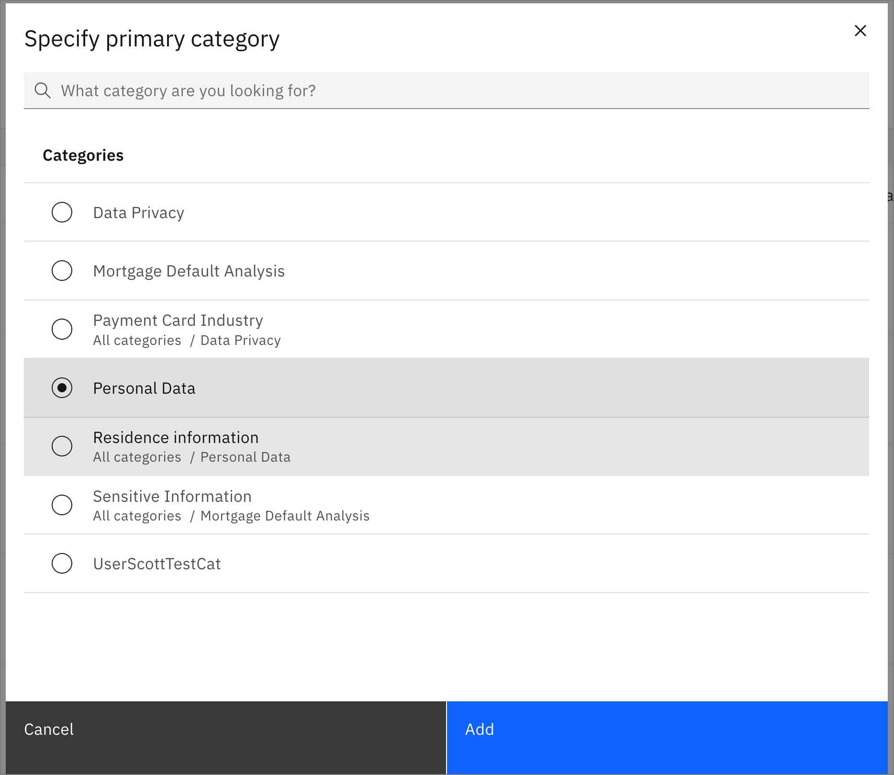
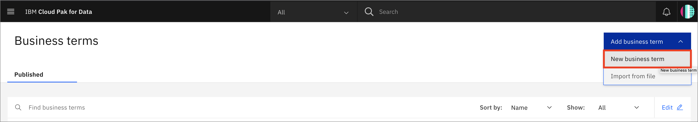
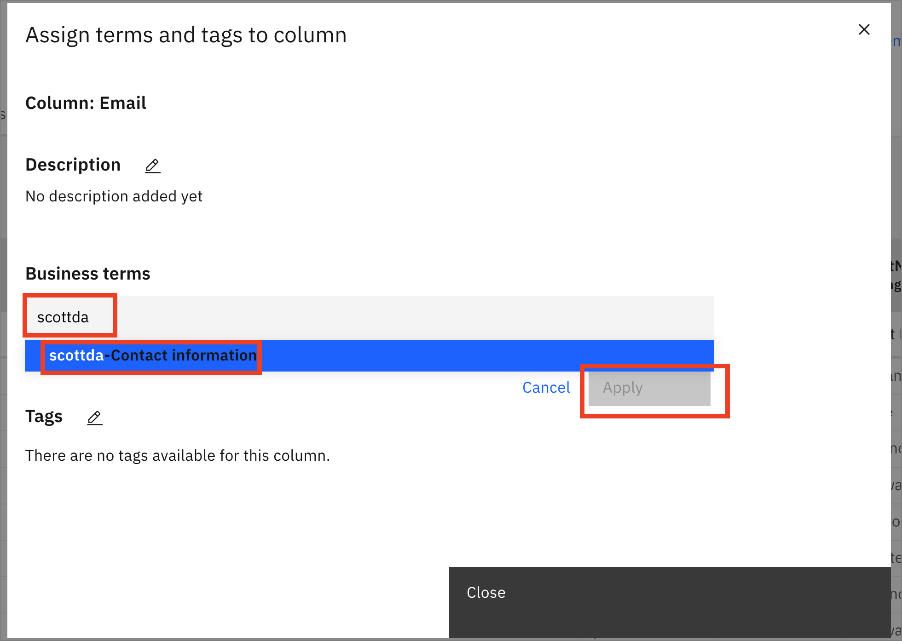
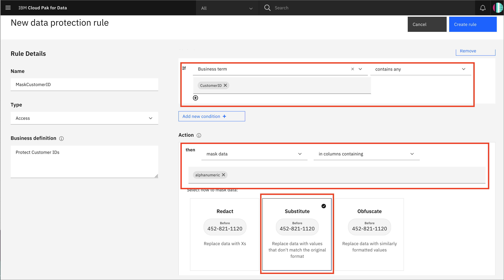

Watson Knowledge Catalogでデータを検索、準備、理解する。
このチュートリアルでは、IBM Cloud Pak for Data プラットフォーム上の IBM Watson Knowledge Catalog を使用して、エンタープライズ・データ・ガバナンスの問題を解決する方法を示します。ガバナンス、データ品質、アクティブ・ポリシー管理を使用して、機密データの保護と管理、データのリネージの追跡、データ・レイクの管理を行う方法を説明します。この知識は、データ資産、データセット、分析モデル、およびそれらの関係をすばやく発見し、キュレーションし、分類し、組織内の他の人と共有するのに役立ちます。
学習目標¶
このチュートリアルでは、以下の方法を学びます。
1.カタログを設定する 1.データアセットの追加 1.コラボレーターの追加とアクセス制御 1.カテゴリの追加 1.データクラスの追加 1.ビジネス用語の追加 1.ポリシーのルールを追加
前提条件¶
- IBM Cloud Pak for Data
- Watson Knowledge Catalog
- カタログを作成・管理するための管理者アクセス
見積もり時間¶
このチュートリアルを完了するには、約 30～45 分かかります。
手順¶
1.カタログを作成する¶
注：デフォルトのカタログは、エンタープライズカタログです。これは、Watson Knowledge Catalog サービスをインストールすると自動的に作成され、高度なデータキュレーションツールが適用される唯一のカタログです。デフォルトのカタログは、データ保護ルールが適用されるように管理されています。情報資産ビューには、キュレーションに役立つデフォルトカタログ内の資産の追加プロパティが表示されます。その後に作成するカタログは、ガバナイズされたものでもガバナイズされていないものでもよく、情報資産ビューはなく、基本的なデータ キュレーション ツールが提供されます。
まず、カタログを作成し、いくつかのデータを読み込みます。
カタログの作成¶
- 左上(☰)のハンバーガーメニューで、
カタログ→全カタログを選択します。

- Your catalogsページから、
Create catalogボタンをクリックします。
*カタログに名前をつけ、Enforce data protection rulesチェックボックスをチェックし、オプションで説明を記入します。そして、Createボタンをクリックします。

*注意：データ保護のチェックボックスを選択する際には、ポップアップウィンドウで
Okをクリックしてください。
2.データ資産の追加¶
カタログにアセットを追加するにはいくつかの方法があります。ここでは、ローカルデータのアセットを追加します。また、以下に接続アセットを追加するオプションセクションがあります。
ローカルデータアセット¶
1.application_personal_data.csv](static/applicant_personal_data.csv)ファイルをダウンロードします。Browse Assetsタブの下、Now you can add assetsの下、here**をクリックしてデータを追加します。
- 右上の
Add to Catalog +をクリックし、Local filesを選択します。

- 「Select file(s)」パネルの「browse」リンクをクリックします。
/data/split/applicant_personal_data.csvファイルをブラウズして選択します。任意の説明を追加して、「Add」ボタンをクリックする。

*NOTE: 読み込みが完了するまで、カタログの中にいてください!カタログから離れると、不完全なアセットは削除されます。
- 新しく追加されたファイルは、カタログのBrowse Assetsタブの下に表示されます。

(Optional) Add Connection¶
Add to Catalog +->Connectionを選択することで、例えば DB2 Warehouse in IBM Cloud など、様々なデータソースへの接続を追加することができます。

- 追加したいデータソースの種類をクリックします（例：
Db2 Warehouse）。
- 接続の詳細を入力し、
Createをクリックします。

- カタログに接続が表示されます。
注意: 仮想化されたデータは、そのカタログの管理者または編集者のアクセス権を持つ人が、Defaultカタログに追加することができます。データの仮想化」を接続として追加するオプションがあります。
(オプション) 接続からのデータの追加¶
データソースへの接続が確立すると、その接続からアセットを追加できるようになります。
+Add to Catalog->Connected assetをクリックします。

- Sourceをクリック ->
Select source.DV`から自分のスキーマ(例:UserXYZW)を参照し、結合したテーブルを選択する。Select "をクリックします。
これでユーザーは、カタログの他のアセットと同様に、このテーブルをプロジェクトに追加することができます。
3.コラボレーターの追加とアクセスコントロール¶
- アクセスコントロールタブで、「コラボレーターの追加」をクリックすると、他のユーザーにカタログへのアクセス権を与えることができます。
-
Collaboratorsの欄にユーザーの名前を入力すると、そのユーザーを検索することができます。名前をクリックしてユーザーを選択し、Addをクリックする。 -
ユーザーの役割を
Admin,Editor,Viewerのいずれかから選択することができます。その後，「Add」ボタンをクリックする。

- カタログのデータにアクセスするには、データ名をクリックしてください。

- メタデータとGovernance artifactsを含むデータの概要が開きます。

Assetタブをクリックすると、最初の1000行のプレビューが表示されます。

Reviewタブをクリックすると、データを評価したり、コメントをつけたりすることができ、データの消費者にフィードバックを与えることができます。

4.カテゴリーの追加¶
Watson Knowledge Catalog の基本的な抽象化は、Category です。カテゴリーは、フォルダに類似しています。必要に応じてカテゴリーを追加したり、CSV形式でインポートしたりすることができます。
カテゴリーのインポート(オプション)¶
ユニークな名前のカテゴリーをインポートするには、ターミナルウィンドウでコマンドを実行することに慣れている必要があります。この作業に慣れていない方は読み飛ばしてください。
- カテゴリの名前はすべてグローバルスコープなので、固有の名前を持つファイルをインポートする必要があります。このリポジトリをクローンまたはダウンロードした場所に行き、
data/wkc/glossary-organize-categories.csvというファイルにナビゲートしてください。スクリプトdata/wkc/prepend-user-tag.pyを、あなたのインティアルやその他のタグを使って実行し、ユニークなファイルを作成します。例えば、./prepend-user-tag -T scottdaとします。T`パラメータでタグを追加しなければ、Pythonのtime.time()文字列を使って、ユニークなCategory名を持つユニークなファイルが生成されます。

- 左上のハンバーガーメニューから
Governance->Categoriesを選択し、Add categoryボタンをクリックしてImport from fileを選択することで、アセットのカテゴリーをインポートします。

- 例えば、
data/wkc/scottda-glossary-organize-categories.csvは、./prepend-user-tag.py -T scottdaを実行して作成したファイルになります。Next」ボタンをクリックします。

Select merge optionでReplace all valuesを選択し、Importをクリックします。

-
インポートが完了すると、「The import completed succesfully」と表示されます。
-
このようにして、カテゴリー、ビジネス用語、分類、ポリシーなどをインポートして、ガバナンスカタログを作成することができます。
手動でカテゴリーを追加する¶
注: カテゴリー、ビジネス用語、データクラス、およびその他のガバナンスの成果物は、グローバルな範囲です。注意: カテゴリー、ビジネス用語、データクラス、およびその他のガバナンスアーティファクトはグローバルな範囲です。例えば、以下の例では、
XXX-Personal Dataの代わりにscottda-Personal Dataを使用しています。
インポートだけでなく、手動でカテゴリーを作成することもできます。左上（☰）のハンバーガーメニューからGovernance→Categoriesを選択し、Add categoryボタンをクリックしてからNew categoryをクリックして、アセットのカテゴリーを追加します。

- イニシャルやユニークなタグ(XXX-Personal Dataなど)を付けた名前と、オプションで説明文を付けて、
Saveボタンをクリックします。

ここで、Personal Dataカテゴリー画面のSubcategoriesの下にあるCreate categoryリンクを押すと、Residence Information*のようなサブカテゴリーを作成することができます。

- Personal Data カテゴリでは、
Business termのような Type を選択することができます。

- 左上のハンバーガーメニューから
Governance→Classificationsを選択することで、同様にConfidential、Personally Identifiable Information、Sensitive Personal Informationのような資産の分類を作成することもできます。

- 右上の「Add classification」ボタンをクリックして、ドロップダウンメニューから「New classification」を選択します。これらの分類は、あなたのカテゴリーにタイプとして追加することができます。

5.データクラスの追加¶
注：カテゴリー、ビジネス用語、データクラス、およびその他のGovernanceアーティファクトは、グローバルな範囲です。作成するように言われたら、自分のイニシャルや何かユニークなタグを前もって付けておかないと失敗します。例えば、以下の例では、「XXX-alphanumeric」の代わりに「scottda-alphanumeric」を使用します。
アセットをプロファイリングする際には、可能な限りコンテンツからデータクラスが推測されます。これについては後で詳しく説明します。また、独自のデータクラスを追加することもできます。
- 左上のハンバーガーメニューから「ガバナンス」→「データクラス」を選択し、「データクラスの追加」ボタンをクリックし、ドロップダウンメニューから「新規データクラス」を選択することで、アセットにデータクラスを追加することができます。

- XXX-alphanumericのように、イニシャルやタグを前もって付けた名前を新しいデータクラスに付けて、Primaryカテゴリの
Changeをクリックします。

Personal Dataのプライマリーカテゴリーを選び、Addをクリックします。

-
ここで、
Save as draftをクリックします。 -
データクラスが作成されたら、オプションとして、このクラスにStewardsを追加したり、classificationやbusiness termsを関連付けたりすることができます。準備ができたら、
Publishボタンをクリックして、ポップアップウィンドウでもう一度Publishをクリックします。

-
それでは、そのデータクラスを applicant_personal_data.csv アセットのカラムに追加してみましょう。
-
先ほど作成したカタログ（例：CreditDataCatalog）に戻って、それを開きます（(☰)ハンバーガーメニューの
Catalogs->All catalogsでCreditDataCatalogを選択）。Browse assetsタブで、データセットapplicant_personal_data.csvをクリックして、Assetタブをクリックすると、列/行のプレビューが表示されます。CustomerID列を見つけて、「顧客番号」の横にある下矢印をクリックし、次にView all*をクリックします。

- 開いたウィンドウで、新しく作成したデータクラスであるalphanumericを検索し、検索で戻ってきたらそれをクリックします。そして、
Selectボタンをクリックします。

6.ビジネス用語の追加¶
注：カテゴリー、ビジネス用語、データクラス、およびその他のGovernanceアーティファクトは、グローバルな範囲です。作成するように言われたら、自分のイニシャルや何かユニークなタグを前もって付けておかないと失敗します。例えば、以下では、
XXX-連絡先情報の代わりにscottda-連絡先情報を使用しています。
ビジネス用語](https://dataplatform.cloud.ibm.com/docs/content/wsj/governance/dmg16.html)を使用して、ビジネスコンセプトの定義を標準化することで、企業全体で統一された理解しやすい方法でデータを記述することができます。
カテゴリーを作成して、それをビジネス用語にする方法はすでに見ました。ビジネス・タームを独自のエンティティとして作成することもできます。
- 左上（☰）のハンバーガー・メニューから、「ガバナンス」→「ビジネス用語」を選択します。
- 右上の「Add business term」ボタンをクリックし、ドロップダウンメニューの「New business term」オプションをクリックします。

新しいビジネス用語に、イニシャルやXXX-Contact Informationのようなタグを前もって付けた名前と、オプションで説明を付けます。Primary category の下の Change をクリックして Personal data* を選択し、Save as draft ボタンをクリックします。

- 用語が作成されると、ウィンドウが表示されます。関連用語の作成やその他のメタデータを追加するための豊富なオプションが表示されます。とりあえず、
Publishをクリックして、この用語をプラットフォームのユーザーが利用できるようにします。ポップアップした確認ウィンドウで「Publish」をクリックします。

先ほど作成したカタログ（例：CreditDataCatalog）に戻って、それを開きます（(☰)ハンバーガーメニュー Catalog -> All catalogs で CreditDataCatalog を選択）。Browse assetsタブで、データセットapplicant_personal_data.csvをクリックし、次にAssetタブをクリックすると、列/行のプレビューが表示されます。Email列を見つけて、列情報アイコンをクリックします（「目」のように見えます）。

開いたウィンドウで、Business termsの横にあるedit*アイコン（「鉛筆」のように見える）をクリックします。
 をクリックします。
をクリックします。
- XXX-Contact Information（scottda-ContactInfoのようなあなたのユニークな名前の用語）先ほどBusiness termsで作成した用語を入力すると、その用語が検索されます。見つかった
Contact Informationの用語をクリックして、Applyをクリックします。

-
用語が適用されたら、そのウィンドウの
Closeをクリックしてください。次に、同じようにして、Telephone列にContact Information Business termを追加します。 -
これで、プラットフォーム内でこれらの用語を検索できるようになります。例えば、トップレベルのCreditDataCatalogに戻って、"What assets are you searching for? "というコメントのある検索バーに、固有の
Contact Information という用語を入力します。

- applicant_personal_data.csvデータセットは、Contact Infomationビジネス用語でタグ付けされたカラムを含んでいるので、表示されます。
7.ポリシーのルールを追加する¶
ユーザーがデータにアクセスする方法を制御するルールを作成できるようになりました。
注意：ワークショップのチームメイトは、ルールに関連付ける用語を単純に1つ再利用することができます（例：CustomerID）。
- XXX-CustomerIDというビジネス用語を作成するか、またはワークショップのチームメイトのビジネス用語の1つをこのエクササイズのために再利用してください。それを上記の手順でデータセットのCustomerID列に割り当てます。詳細が必要な場合は以下を参照してくださいが、まず自分で試してみてください。また、注意喚起が不要な場合は以下のAdding a ruleにスキップしてください。
ビジネス用語のレビューを作成する方法¶
-
左上（☰）のハンバーガーメニューから、「Governance」→「Business terms」を選択します。
-
右上の「ビジネス用語の追加」ボタンをクリックし、ドロップダウンメニューの「新規ビジネス用語」を選択します。
-
新しいビジネス用語に XXX-CustomerID という名前と、オプションで説明を付けます。プライマリー・カテゴリの下にある「変更」をクリックして、Personal data*を選択し、「ドラフトとして保存」ボタンをクリックします。次のウィンドウで
Publishをクリックします。
先ほど作成したカタログ（例：CreditDataCatalog）に戻り、それを開きます（(☰)ハンバーガーメニューのCatalog->All catalogsでCreditDataCatalogを選択）。Browse assetsタブで、データセットapplicant_personal_data.csvをクリックして、Assetタブをクリックすると、列/行のプレビューが表示されます。CustomerID列を見つけて、Column information*アイコンをクリックします（「目」のように見えます）。
-
開いたウィンドウで、Business terms の隣にある edit アイコンをクリックします（「鉛筆」のように見えます）。
-
Business terms の下に CustomerID を入力すると、その用語が検索されます。検索された
CustumerIDの用語をクリックして、Applyをクリックします。その後、ポップアップウィンドウを閉じます。
ルールの追加¶
-
左上のハンバーガーメニューから、
Governance->Rulesを選択します。 -
右上の「Add rule」ボタンをクリックして、ドロップダウンメニューから「New rule」を選択してください。
-
「Create a new rule」ページで、「Data protection rule」オプションを選択します。

-
ルールにユニークな XXX-Name を与え、Type を
Accessに設定したまま、Business definition を追加してください。 -
Rule builder > Condition1 の下にあります。If
の条件では、*Business term* *Contains any* *CustomerID*を選択します。*Action* の下のthen` パネルでは、mask data in columns containing alphanumeric を選択します。Substitute」のタイルを選択すると、個人を特定できないハッシュが作成されます。これにより、実際のCustomerIDは見えなくなりますが、データベースの結合などの動作は可能になります。ルールの作成」ボタンをクリックします。

- ここで、カタログ内のapplicant_personal_data.csvアセットのCustomerIDカラムに戻ると、前と同じように見えます。しかし、管理者ではないユーザーには「ロック」アイコンが表示され、customerIDがハッシュ値で置き換えられていることがわかります。
データを難読化するルールを追加するには、Age*という新しいデータクラスを作成します。必要に応じて上記の説明を参照し、クラスを公開することを忘れないでください。
CreditDataCatalogに戻り、applicant_personal_data.csv資産の下で、Overviewタブに行き、Age列までスクロールします。下矢印」をクリックすると、データがCodeに分類されていることが推測されます。View all`をクリックして分類器を変更します。

今度は、Age*と入力し始めてclassifierを変更します。これが検索で出てきたら、それを選択して、Selectボタンをクリックします。

- 前述の指示に従って、この Age カラムを 難読化 するための新しいデータ保護ルールを構築することができます。
*これで、管理者以外のユーザーがその列を見たときに、同様のフォーマットのデータに置き換えられたデータが表示されます。
まとめ¶
このラボでは、以下の方法を学びました。
- カタログとデータの設定
- コラボレーターの追加とアクセス制御
- カテゴリーの追加
- データクラスの追加
- ビジネス用語の追加
- ポリシーのルールの追加
このチュートリアルは、Getting started with IBM Cloud Pak for Data Learning Pathの一部です。このシリーズを続けて IBM Cloud Pak for Data について詳しく学ぶには、次のパターンである Data analysis, model building, and deploying with Watson Machine Learning with notebook を参照してください。次のチュートリアルであるAutomate model building with AutoAIまたはBuild a predictive machine learning model quickly and easily with IBM SPSS Modelerを見てみましょう。
このチュートリアルでは、IBM Cloud Pak for Data プラットフォームでデータを扱う際に利用できる強力なツールの一部を学びました。IBM Watson Knowledge Catalog を使えば、チーム・メンバーがそれぞれの役割で協力して、データと AI を企業にもたらすことができます。